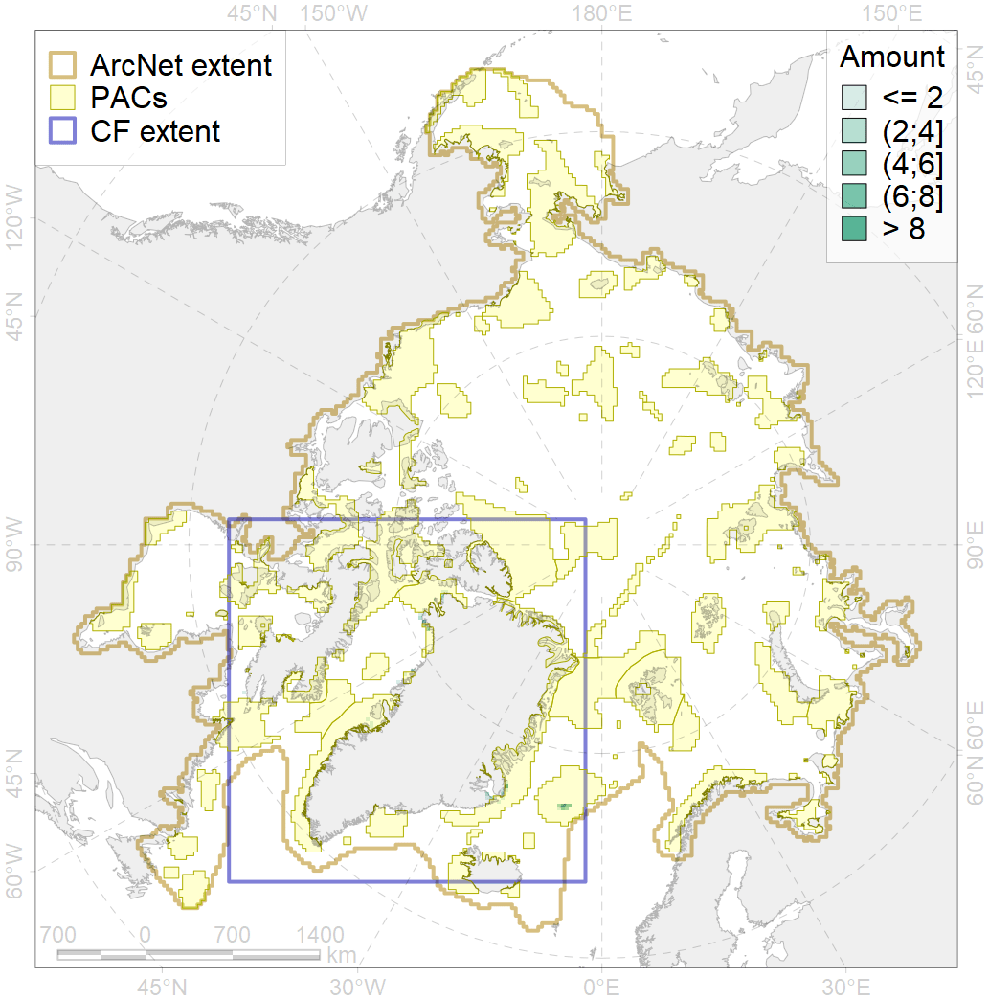
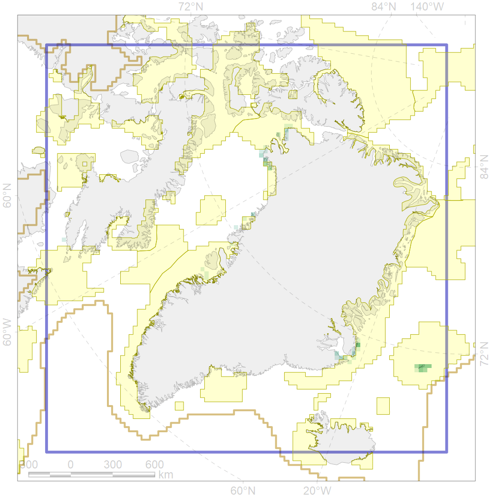

6031

| CF ID | 6031 |
| CF Name | Little auk (Alle alle alle) breeding colonies in Greenland and Canada |
| Time Period | 1994 |
| Source(s) | Boertmann et al 1996, Finley & Evans 1984 |
| Seasonality | May-August |
| Depth Horizon | <0 m |
| Methodology | Field Data |
| Author Name | Gavrilo, Tertitski |
| Notes | |
| Conservation Target Set in the Scenario | 0.72 |
| Conservation Target Achieved in the Scenario | 0.743 (Scenario: 103.2%) |
| PAC ID | Proportion in the PAC | Contribution to ArcNet Target Achievement | PAC’s Contribution to the Achieved Target |
|---|---|---|---|
| 32 | 11.8% | 15.7% | 15.2% |
| 34 | 40.3% | 55.9% | 54.2% |
| 44 | 4.9% | 6.7% | 6.5% |
| 48 | 0.7% | 0.6% | 0.6% |
| 49 | 8.3% | 9.1% | 8.8% |
| 51 | 6.2% | 8.7% | 8.4% |
| inner | 72.2% | 96.7% | 93.8% |
| outer | 27.8% | 6.4% | 6.2% |